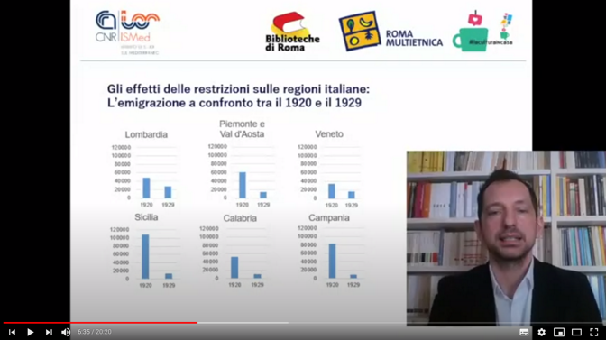

Materiali
Lezioni, presentazioni e incontri

Le immigrazioni a Roma dal 1870
alla seconda guerra mondiale
Convegno del 6 Novembre 2020 / materiali video
Il convegno intende ripercorrere le tappe salienti della storia delle immigrazioni nella città di Roma nel periodo compreso tra il 1870 e la seconda guerra mondiale. Flussi, percorsi, politiche, storie individuali e collettive, lavori, specializzazioni, percorsi di radicamento sono intrecciati ai grandi nodi della storia contemporanea della città: la proclamazione della Capitale, l’espansione edilizia, lo sviluppo industriale, la crescita delle istituzioni, la stagione liberale, le guerre mondiali, il fascismo, l’antifascismo, la resistenza. L’evento si svolge all’interno del progetto Biblioteche di Roma - CNR-ISMed “150 anni di immigrazioni a Roma Capitale. Storia, memoria, territori” e apre un lungo ciclo di incontri che si svolgeranno nelle biblioteche capitoline di quartiere. Nel giugno 2021 ci sarà un secondo convegno centrale dedicato alle immigrazioni a Roma dal 1945 a oggi.
Il convegno su YouTube
-

- Luca Bergamo (Vice-Sindaco di Roma e asserrore alla Crescita Culturale)
- Vittorio Bo (Commissario per la gestione delle Biblioteche e Centri Culturali di Roma)
- Gilberto Corbellini (Direttore del Dipartimento di Scienze Umane del CNR
- Salvatore Capasso (Direttore CNR-ISMed)
- Michele Colucci (Ricercatore CNR-ISMed)
-

- Lo sviluppo demografico (Massimiliano Crisci, Cnr - Irpps)
- L’evoluzione urbanistica (Vezio De Lucia, urbanista)
-
- L’immigrazione operaia (Maria Rosa Protasi, Università La Sapienza)
- L’immigrazione bracciantile nel Litorale Romano (Simone Bucri, Ecomuseo Litorale Romano - Cooperativa Ricerca sul Territorio)
-
- Antiurbanesimo e migrazioni pianificate: la città nelle politiche del regime (Stefano Gallo, Cnr – ISMed)
- Arrivi e insediamenti durante il ventennio (Antonio Parisella, Museo storico della liberazione di via Tasso)
-
- Una città di immigrati: Roma e “La storia” di Elsa Morante (Alessandra Gissi, Università L’Orientale di Napoli)
- Tutte le strade portano alle Ardeatine: le immigrazioni e la strage (Alessandro Portelli, Circolo Gianni Bosio)
Un secolo di migrazioni in Italia (1920-2020)
Ciclo di videolezioni / 31 Marzo - 5 Maggio 2020
Ciclo di lezioni dedicate alla storia delle migrazioni, organizzate dal CNR-ISMed e da Biblioteche di Roma. L'idea nasce nel marzo 2020, nel pieno delle restrizioni legate all’epidemia del Covid-19, per continuare a raccontare la storia anche da casa. Un'opportunità per studenti, insegnanti, lettori, ricercatori, semplici curiosi, che possono confrontarsi direttamente con gli studiosi esperti della materia.
Cosa sappiamo sulla storia delle migrazioni in Italia? Quando, come e perché sono emigrati all’estero i cittadini italiani? Da chi e come è composta l’immigrazione straniera? Quali sono le principali traiettorie delle migrazioni interne?
link delle videolezioni
-

La prima lezione del ciclo "Un secolo di migrazioni in Italia (1920-2020)", si sofferma su ciò che avvenne in Italia e nel mondo dopo la prima guerra mondiale. Il blocco dei flussi legato alla guerra e le successive restrizioni volute da alcuni Stati, in primis gli Usa, crearono in Italia una situazione difficile. La spinta a partire si mantenne molto forte, a causa della disoccupazione e delle tensioni del dopoguerra: le porte alle migrazioni si chiusero però molto rapidamente. Parallelamente, iniziarono nuovi movimenti migratori, legati all’avvento del regime fascista, frutto dell’intreccio tra motivazioni politiche e ragioni economiche.
-
La seconda lezione tratta i flussi e le politiche migratorie sviluppate nel ventennio fascista. Di fronte al blocco internazionale dei flussi migratori, deciso dai maggiori paesi di destinazione e poi imposto dalla crisi economica del ’29, il fascismo mutò radicalmente il proprio approccio alle migrazioni. Vennero emanate leggi che cercavano di ostacolare gli espatri, ma anche di impedire gli spostamenti interni al territorio nazionale, in particolare verso le maggiori città. La soppressione della resistenza libica e l’aggressione all’Etiopia aprirono nuove strade all’emigrazione italiana, sotto il controllo dello Stato. Alla fine degli anni’30, gli accordi bilaterali con la Germania nazista diressero i disoccupati italiani verso l’economia di guerra di Hitler.
-
La terza lezione del ciclo si sofferma sugli anni della ricostruzione successiva alla seconda guerra mondiale. I flussi migratori variano molto rispetto al periodo precedente: arrivano profughi prevalentemente in transito e persone provenienti dalle zone coloniali, ma soprattutto ricominciano in modo sistematico le migrazioni interne e i movimenti verso l'estero.
-
La quarta lezione del ciclo affronta il periodo tra il boom economico e la fine del decennio ’60. Sono gli anni della grande migrazione interna tra Meridione e Centro-nord, dell’affermarsi della società dei consumi e del declino della civiltà contadina. Gli immigrati interni ebbero un ruolo importante in questo processo e nella richiesta di nuovi diritti che toccò l’apice con l’Autunno caldo.
-
Quinta lezione. La crisi degli anni 70 determina il ritorno in Italia di molti emigranti. Allo stesso tempo le trasformazioni economiche spingono le migrazioni interne verso le zone del Centro e del Nord Est. Si affaccia in modo sempre più importante l'immigazione straniera, che nel corso del tempo interessa l'intero territorio nazionale.
-
La sesta e ultima lezione del ciclo affronta il periodo a noi più vicino, gli ultimi trenta anni che separano il 1990 da oggi. Il tema dominante è l'immigrazione straniera, che procede con ritmi estremamente elevati trasformando il volto dell'Italia, in particolare nella fase centrale del periodo tra 2000 e 2010. Sanatorie, cittadinanza, richiedenti asilo sono alcuni dei temi affrontati, per concludere con l'evoluzione delle migrazioni interne e la ripresa dei flussi verso l'estero.
DiMMi
Diari Multimediali Migranti
Ciclo di presentazioni
Biblioteche di Roma e Cnr-Ismed in collaborazione con l'Archivio Diaristico Nazionale, l'Archivio Memorie Migranti e Amref hanno presentato online le due antologie dei racconti finalisti del concorso DiMMi, Diari Multimediali Migranti, concorso nazionale per la raccolta e la diffusione di testimonianze autobiografiche di persone di origine o provenienza straniera.
DiMMi è un’esperienza nata nel 2012 e che ha già dato vita a tre edizioni dell’omonimo concorso riservato alle storie cittadini di origine o provenienza straniera che vivono o hanno vissuto in Italia e nella Repubblica di San Marino e che ha già favorito la raccolta di oltre 350 testimonianze su scala nazionale.
Presentazione del libro Parole oltre le frontiere - Dieci storie migranti (Terre di Mezzo, 2018), antologia dei dieci racconti finalisti del concorso DiMMi, Diari Multimediali Migranti 2017.
Intervengono:
Alessandro Triulzi, AMM - Archivio delle memorie migranti
Gaia Colombo, Amref Health Africa - Italia
e gli autori finalisti del Concorso 2017:
Dominique Boa, Elona Aliko, Hassan Osman Ahmed
Modera Michele Colucci (Cnr-ISMed)
Presentazione del libro Se il mare finisce - Racconti multimediali migranti (Terre di Mezzo, 2019), antologia dei racconti finalisti del concorso DiMMi, Diari Multimediali Migranti 2018.
Intervengono:
Massimiliano Bruni, Archivio dei diari
Alessandro Triulzi, AMM - Archivio delle memorie migranti
Gaia Colombo, Amref Health Africa - Italia
e gli autori finalisti del Concorso 2018:
Clementine Pacmogda, Bakary Jobe, Fernanda Gonzalez
Modera Stefano Gallo (Cnr-ISMed)